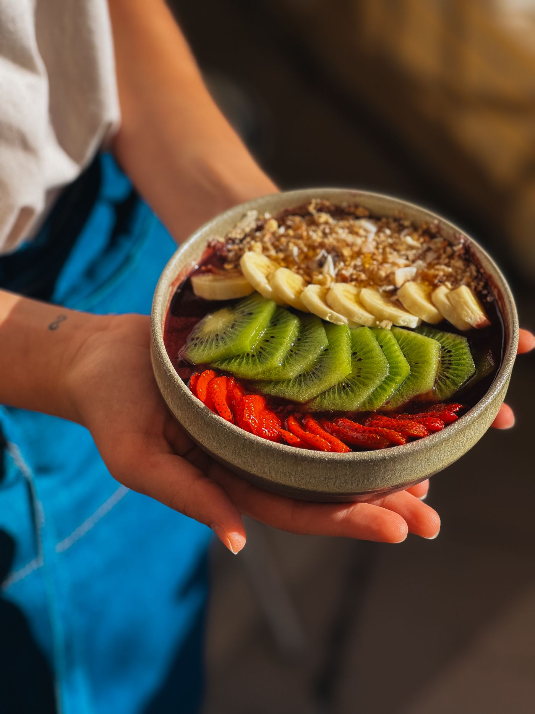

PURO AÇAÍ · LITORAL
TÁ
QUENTE.
VOCÊ
MERECE.
(você já sabe o que vem agora)

AÇAÍ DE
VERDADE
Roxo escuro, quase preto. Denso.
A colher fica em pé.
A COR
NÃO MENTE
Açaí claro, rosado ou aguado = açúcar, xarope e água.
O nosso é roxo escuro porque é só a polpa.
de verdade
— sem enrolação.
DEPOIS
DA PRAIA
BATE AQUELA
Gelado, cremoso, do jeito que a tarde quente pede.
Tarde, noite, fim de semana — tá sempre na hora.
A OFERTA
MANDA
UM AÇAÍ
Copo [tamanho] · [topping/topping]
a partir de [preço]
Combo [nome do combo]
[preço]
Entrega em [tempo] · [bairro/região]
ENTREGA RÁPIDA · [região]
PURO
AÇAÍ
BORA?
MANDA
UM WHATS
Chama no [WhatsApp] e teu açaí já tá saindo.
[@handle] · [bairro/cidade]
PEDIR AGORA
→
[WhatsApp]
PURO
AÇAÍ